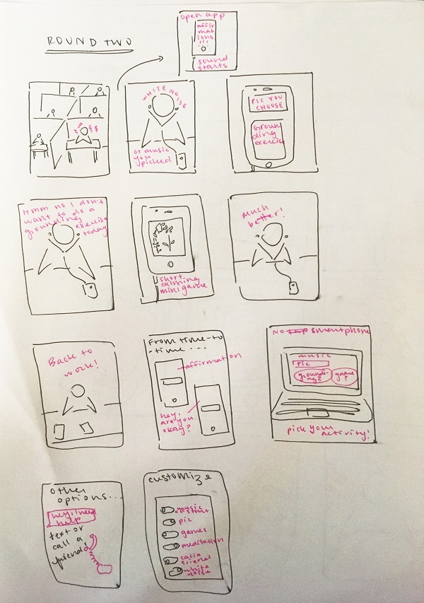

A stressed office employee needs to do some self-care, stat! But they only have a limited amount of time to attend to their needs because *~*capitalism is a prison*~* and they have to keep working. They don't have the time to mess around, trying to sort through a lot of options and potential self-care routes that don't work for them! If only they could have some pre-selected routines at the ready that they know they like! They need help now, and they have to get back to work! Most employers don't allow for self-care or account for diverse needs!
After making my first storyboard, my critique partner asked about non-smartphone options, more non-visual communication of sequence of events, and better-communicating the customization of the self-care app.
This time, our protoganist is feeling a little more picky! They would rather play a quick, calming game to center themselves than participate in a grounding exercise. What about when they need in-person help? And what about their friend, who doesn't have a phone to use the app with?
In this storyboard, I tried to more clearly illustrate the customization process, and I tried to do so using fewer words. Users can customize the app's responses in advance, toggling on and off different options, like "play music on app start-up," and "display a picture of my choosing." They can also ask the app to prompt them to call or text loved ones to ask for help, maybe just as a standard action, or perhaps if they've opened up the app a bunch on a given day. I also included a desktop view, and a frame showing the actual start-up of the app!